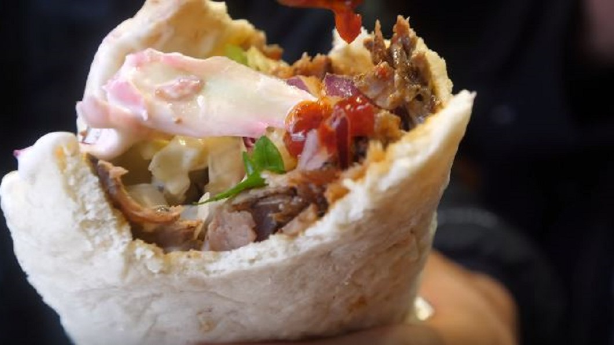

丹麥首都哥本哈根街頭有不少隱藏版美食，看似平凡的漢堡或是烤肉捲餅，其實都藏有丹麥魂，店家會採用當地食材改良內餡。
另外不能錯過的是當地的海鮮和肉排料理，配菜和醬料都是獨特丹麥風格。 丹麥首都哥本哈根，有那些美食跟著當地人一起去探索。
部落客：「我們現在要出發去吃，我想是街頭小吃之王。」 一眼看過去，這家烤肉捲餅店的黃色招牌非常搶眼，店門口和店裡滿滿都是人。
部落客：「從上層餡料你就可以看到，這種烤肉雖然有起源地，但是在不同文化，不同地點，又發展出不同的餡料搭配，
你可以看到他們使用紫甘藍。」 結合丹麥當地食材，改良後的烤肉捲餅，吃起來味道如何呢？ 部落客：「所有的蔬菜和肉混合，
還有辣椒的味道，我覺得可以再辣一點，但現在就很好吃了。」 喜歡吃辣的，再淋上一些店家提供的辣醬，保證讓人一口接一口，停不下來。
一般觀光客可能會跳過的加油站漢堡店，也在當地人推薦名單上。 拆開包裝，馬上就看到厚實的漢堡肉和豐富餡料，讓人食指大動。
部落客：「哇，這口感真的很棒，我覺得第一口咬下，牛肉表現得很棒，但所有餡料結合恰到好處，麵包也很鬆軟。」 除了街頭小吃，
也別忘了到餐廳，品嘗丹麥風格海鮮料理。 部落客：「這是經典的丹麥料理，這是炸魚排，上面放滿蝦子，這就像是一份很大份的漢堡，
因為底層還有一片麵包。」 這家餐廳料理的方式，還在魚排下方淋滿千島醬，品嘗時，記得要同時吃蝦子和魚排，滋味才完整。 部落客：
「嗯，我喜歡蝦子的味道，魚排有著油炸後的酥脆口感。」 另一道肉排料理，下方放滿青豆和薯條，上面再放上切片辣根跟檸檬，開動前，
別忘了淋上肉汁。 部落客：「這真的是很獨特的組合，我之前從來沒這樣吃過，有小青豆魚，鹹魚，辣根和肉汁，上面還淋有檸檬汁，這是丹麥吃法。」
食材混搭，一口咬下，在嘴裡散發濃郁滋味，到丹麥旅遊時，別忘了親自試試。
